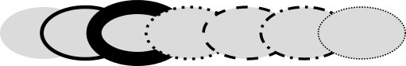

Inkscape tutorial: Base
Questo tutorial mostra l'uso di base di Inkscape. Questo è un normale documento SVG ed è possibile aprirlo, modificarlo, copiarlo e salvarlo.
Il tutorial di base si occupa della navigazione nell'ambiente grafico, della gestione dei documenti, degli strumenti di base, delle tecniche di selezione, della trasformazione degli oggetti selezionati, del raggruppamento, del riempimento e del contorno degli oggetti, del loro allineamento e del loro ordinamento lungo l'asse verticale. Per argomenti avanzati consulta gli altri tutorial del menu Aiuto.
Navigazione nell'area di lavoro
Ci sono molti modi per scorrere l'area di lavoro. Ad esempio tramite la tastiera con Ctrl+freccia (lo si può provare subito!). È possibile traslare il documento tenendo premuto il pulsante centrale del mouse, oppure semplicemente usando le barre di scorrimento (che si possono far apparire e scomparire premendo Ctrl+B). Si può anche usare la rotella del mouse per far scorrere la pagina verticalmente, oppure orizzontalmente premendo anche Maiusc.
Ingrandimento
Il modo più semplice è quello di premere i tasti - e + (o =). Altrimenti si possono usare Ctrl+tasto centrale (del mouse) o Ctrl+tasto destro per ingrandire, Maiusc+tasto centrale o Maiusc+tasto destro per rimpicciolire, o anche ruotare la rotella mentre si tiene premuto il tasto Ctrl. Nella parte in basso a destra si trova un'area di testo in cui inserire con precisione il valore dell'ingrandimento in percentuale (premendo Invio successivamente). Inoltre si può usare lo strumento Ingranditore (nella barra degli strumenti sulla sinistra) che permette di ingrandire un'area selezionandola con il mouse.
Inkscape mantiene anche una cronologia degli ingrandimenti usati nella sessione di lavoro corrente. Premi il tasto ` per tornare all'ingrandimento precedente e Maiusc+` per quello successivo.
Strumenti
La barra verticale sulla sinistra mostra gli strumenti di disegno e di modifica. Nella parte superiore della finestra, sotto il menu, si trova la Barra dei comandi con i pulsanti dei comandi generali e la Barra dei controlli strumento con controlli specifici per ogni strumento. La Barra di stato, nella parte inferiore della finestra, mostra utili consigli e messaggi contestuali.
Molte operazioni sono disponibili mediante scorciatoie da tastiera. Apri Aiuto > Scorciatoie con mouse e tastiera per vedere la lista completa.
Creazione e gestione dei documenti
Per creare un nuovo documento vuoto, si può usare o premere Ctrl+N. Per creare un nuovo documento da uno dei modelli di Inkscape, si può usare o premere Ctrl+Alt+N
Per aprire un documento SVG esistente, usare (Ctrl+O). Per salvare, usare (Ctrl+S) o (Maiusc+Ctrl+S) per salvare con un nuovo nome. (Inkscape può essere ancora instabile, è quindi importante ricordarsi di salvare spesso!)
Inkscape usa il formato SVG (Scalable Vector Graphics) per i suoi file. SVG è uno standard aperto ampiamente supportato dai software di grafica. I file SVG sono basati su XML e possono essere modificati con qualunque editor di testo o XML (oltre che con Inkscape). Oltre a SVG, Inkscape può importare ed esportare diversi altri formati (EPS, PNG).
Inkscape apre una finestra separata per ogni documento. È possibile spostarsi tra di loro mediante il proprio gestore di finestre (es. Alt+Tab), oppure usare la scorciatoia di Inkscape, Ctrl+Tab, che mostrerà ciclicamente tutte le finestre di documenti aperte. (Per far pratica prova a creare un nuovo documento e spostarti tra i due documenti) Nota: Inkscape gestisce queste finestre come le schede di un browser web, ciò significa che la scorciatoia Ctrl+Tab funziona solamente con i documenti eseguiti nello stesso processo. Se si aprono più file da un gestore file o si avviano più processi di Inkscape, questa non funzionerà.
Creazione di forme
È tempo di qualche simpatica figura! Clicca sullo strumento Rettangolo nella barra (o premi F4) e trascina il mouse, sia qui che in un nuovo documento:
Come si può vedere, i rettangoli in maniera predefinita sono blu, con un contorno nero, e completamente opaco. Si vedrà in seguito come cambiare questo comportamento. Con gli altri strumenti è possibile creare anche ellissi, stelle e spirali:
Questi strumenti sono conosciuti come forme. Ogni forma presenta uno o più punti di modifica sotto forma di maniglie; si può provare a spostarli per vedere come le forme reagiscono. Il Pannello di controllo per gli strumenti di forma è un altro modo per modificare una figura; questi controlli modificano la figura selezionata (cioè quella che mostra i punti di modifica) e impostano i parametri predefiniti per le nuove figure.
Per annullare l'ultima azione premere Ctrl+Z. (Se si cambia idea si può ripetere l'ultima azione annullata premendo Maiusc+Ctrl+Z.)
Muovere, ridimensionare, ruotare
Lo strumento più usato in Inkscape è il Selettore. Clicca sul primo tasto in alto sulla barra (quello con la freccia), o premi F1 o Spazio. Ora si può selezionare qualunque oggetto sull'area di lavoro. Prova a cliccare sul rettangolo qui sotto:
Appariranno otto frecce modificatrici attorno all'oggetto. Ora è possibile:
-
Muovere l'oggetto trascinandolo. (Premi Ctrl per limitare lo spostamento nelle sole direzioni orizzontale e verticale.)
-
Ridimensionare l'oggetto cliccando sulle frecce e trascinando. (Premi Ctrl per mantenere le proporzioni tra altezza e larghezza.)
Ora prova a cliccare nuovamente sul rettangolo. Le maniglie sono cambiate. Ora è possibile:
-
Ruotare l'oggetto sempre cliccando e trascinando. (Premi Ctrl per ruotare di 15 gradi alla volta. Per cambiare centro di rotazione basta spostare la croce.)
-
Distorcere l'oggetto trascinando le maniglie, tranne quelle in angolo. (Premi Ctrl per distorcere a scatti di 15 gradi.)
Mentre si usa il Selettore, è anche possibile modificare i campi numerici nella barra di controllo (sopra la tela) per impostare valori esatti per le coordinate (X e Y) e le dimensioni (L e H) della selezione.
Trasformazioni tramite i tasti
Una delle caratteristiche peculiari di Inkscape è la sua grande usabilità da tastiera. Non c'è nulla che non si possa fare usando la tastiera, persino la trasformazione degli oggetti.
Si può usare la tastiera per muovere (con i tasti freccia), ridimensionare (con i tasti < e >), ruotare (con i tasti [ e ]) gli oggetti. Normalmente il movimento e il ridimensionamento sono di 2 pixel, ma premendo Maiusc, diventano 10 volte superiori. Ctrl+> e Ctrl+< ridimensionano rispettivamente del 200% o 50% dall'originale. Le rotazioni sono normalmente di 15 gradi; premendo Ctrl diventano di 90 gradi.
Tuttavia, le più utili sono le trasformazioni a livello pixel, che si fanno usando Alt insieme ai tasti di trasformazione precedenti. Per esempio Alt+freccia muoverà la selezione di un pixel dell'attuale zoom (cioè 1 pixel di schermo, da non confondere con l'unità px che è un'unita di lunghezza del SVG indipendente dall'ingrandimento). Questo significa che ingrandendo il disegno, facendo Alt+freccia si otterrà un movimento assoluto più piccolo che però apparirà ancora di un pixel sullo schermo. E' possibile posizionare un oggetto con precisione arbitraria semplicemente ingrandendo o rimpicciolendo a piacere.
In maniera simile, Alt+> e Alt+< ridimensionano la selezione così che la sua dimensione visibile cambi di un pixel di schermo, mentre Alt+[ and Alt+] ruotano in modo tale che il punto più lontano dal centro si muova di un pixel di schermo.
Attenzione: gli utenti Linux potrebbero non ottenere i risultati voluti con Alt+frecce e alcune altre combinazioni di tasti se il loro gestore di finestre intercetta tali eventi prima di Inkscape. Una soluzione veloce è quella di cambiare la configurazione del gestore di finestre.
Selezioni multiple
Si possono selezionare più oggetti contemporaneamente cliccando mentre si tiene premuto Maiusc. In alternativa si può cliccare e trascinare sugli oggetti che si vogliono selezionare; quest'ultima tecnica è detta selezione ad elastico (il puntatore crea un elastico quando viene spostato su uno spazio vuoto; premendo Maiusc prima di iniziare lo spostamento verrà creato sempre un elastico). Fai pratica selezionando tutti e tre i seguenti oggetti:
Ora usa la selezione ad elastico (Maiusc+trascinamento o semplicemente trascinando) per selezionare le due ellissi ma non il rettangolo:
Ogni singolo oggetto all'interno di una selezione mostra un contorno di selezione, solitamente una cornice rettangolare tratteggiata. Ciò permette di vedere cosa è selezionato e cosa non lo è. Per esempio, se si selezionano entrambe le ellissi e il rettangolo, senza i contorni sarebbe difficile capire se le ellissi sono selezionate o meno.
Cliccando tenendo premuto Maiusc su un oggetto selezionato lo si esclude dalla selezione. Prova a selezionare tutti e tre gli oggetti precedenti ed escludere le ellissi usando Maiusc+clic.
Premendo Esc vengono deselezionati tutti gli oggetti. Ctrl+A seleziona tutti gli oggetti nel livello corrente (se non sono stati creati ulteriori livelli, questo equivale a selezionare tutti gli oggetti nel documento).
Raggruppamento
Parecchi oggetti possono essere combinati insieme a formare un gruppo. Questo si comporta come un unico oggetto quando lo si trasforma o lo si sposta. Qui sotto, i tre oggetti sulla sinistra sono indipendenti, mentre gli stessi tre oggetti sulla destra sono uniti in un gruppo. Prova a spostare il gruppo:
Per creare un gruppo seleziona più oggetti e premi Ctrl+G. Per separare gli oggetti di un gruppo selezionalo e premi Ctrl+U. Anche i gruppi possono essere raggruppati allo stesso modo, in maniera ricorsiva, con profondità arbitraria. Tuttavia Ctrl+U separa solo l'ultimo livello di raggruppamento; per arrivare a separare i singoli oggetti occorrerà premere più volte.
Non è comunque necessario separare gli oggetti di un gruppo per modificarli. Premendo Ctrl e cliccando sull'oggetto desiderato esso verrà selezionato e potrà essere modificato separatamente. Usando Maiusc+Ctrl+clic si possono modificare più oggetti (all'interno o meno di un gruppo) in selezioni multiple senza preoccuparsi dei raggruppamenti. Prova a muovere o trasformare singoli oggetti del gruppo sopra senza separarlo, prova poi a selezionarlo e deselezionarlo per vedere che esso è ancora un gruppo.
Riempimento e contorni
Molte delle funzioni di Inkscape sono disponibili mediante delle finestre di dialogo. Probabilmente il modo più semplice per colorare un oggetto è quello di aprire la finestra dei Campioni di colore dal menu Visualizza (o premere Maiusc+Ctrl+W), selezionare un oggetto e cliccare un campione per colorarlo (cambiarne il colore di riempimento).
Più potente è la finestra di dialogo Riempimento e contorni raggiungibile dal menu Oggetto (o premendo Maiusc+Ctrl+F). Seleziona l'oggetto da colorare qui sotto e apri la finestra di dialogo.
Noterai che questa finestra ha tre schede: Riempimento, Colore contorno, Stile contorno. La prima permette di modificare il riempimento (interno) dell'oggetto selezionato. Mediante i pulsanti appena sotto si può scegliere il tipo di riempimento: nessun riempimento (il bottone con la X), colore uniforme, gradiente lineare o radiale. Per la figura sopra, è attivato il pulsante del riempimento uniforme.
Ancora sotto, si trova un insieme delle tavolozze colore (selettori), ciascuna nella propria scheda: RGB, CMYK, HSL, Ruota. Forse la più utile è quest'ultima, dove si può ruotare il triangolo per scegliere il colore e all'interno scegliere la luminosità. Tutte le tavolozze hanno un selettore per il canale alpha (opacità) per l'oggetto selezionato.
Ogni volta che si seleziona un oggetto, il selettore di colore viene aggiornato per mostrare il riempimento e il contorno corrente (per selezioni multiple, viene mostrato il colore medio). Prova con queste figure o creane delle nuove:
Usando la scheda Colore contorno, si può rimuovere il contorno dell'oggetto, o dargli qualsiasi colore o trasparenza:
L'ultima scheda, Stile contorno, permette di modificare la larghezza e altri parametri del contorno:
Infine, invece di un colore uniforme, si possono usare gradienti per il riempimento o per il contorno:
Quando si passa da colore uniforme a gradiente, il nuovo gradiente appena creato usa il precedente colore, andando da trasparente a opaco. Usa lo strumento Gradiente (Ctrl+F1) per orientare le maniglie del gradiente, connesse da una linea che definisce la direzione e la lunghezza del gradiente. Quando una delle maniglie è selezionata (evidenziata in blu), la finestra di dialogo modifica il colore di quel passaggio invece del colore dell'intero oggetto selezionato.
Un altro modo conveniente per cambiare colore ad un oggetto è mediante lo strumento Contagocce (F7). Cliccando in qualsiasi punto nel documento con questo strumento, si assegna il colore del punto cliccato al riempimento dell'oggetto selezionato (Maiusc+clic lo assegna al contorno).
Duplicazione, allineamento, distribuzione
Una delle più comuni operazioni è la duplicazione di un oggetto (Ctrl+D). L'oggetto duplicato viene posizionato esattamente sopra l'originale ed è automaticamente selezionato, così da poterlo muovere direttamente con il mouse o le frecce. Per fare pratica, prova a creare una linea con delle copie di questo quadratino nero:
È possibile che le copie del quadratino non siano perfettamente allineate. A questo punto è utile la finestra di dialogo Allineamento (Maiusc+Ctrl+A). Seleziona tutti i quadretti (usando Maiusc+clic o la selezione ad elastico), apri la finestra di dialogo e premi il pulsante “Centra sull'asse orizzontale”, poi il pulsante “Distribuisce equamente la distanza orizzontale tra gli oggetti”. Gli oggetti ora sono ben allineati ed equidistanti. Qui c'è qualche altro esempio di allineamento e distribuzione:
Ordinamento verticale
Il termine ordinamento verticale si riferisce all'ordine dell'impilamento verticale degli oggetti in un disegno, cioè quali oggetti sono in primo piano e oscurano altri. I due comandi nel menu Oggetto, Sposta in cima (tasto Home) e Sposta in fondo (tasto End), servono a spostare gli aggetti selezionati alla sommità o sul fondo dell'ordinamento verticale del livello. Altri due comandi, Alza (PagSu) e Abbassa (PagGiù), spostano in alto o in basso la selezione di un passo alla volta rispetto ad un oggetto non selezionato (contano solo gli oggetti che si sovrappongono alla selezione; se nessun oggetto si sovrappone, Alza e Abbassa spostano rispettivamente in cima o in fondo).
Fai pratica con i seguenti oggetti cambiando l'ordine verticale, in modo da portare alla sommità l'ellisse più a sinistra e sul fondo quella più a destra:
Una scorciatoia molto utile per selezionare è il tasto Tab. Se non è selezionato nulla, con Tab si seleziona l'oggetto più in basso; altrimenti si seleziona l'oggetto appena sopra quello selezionato. Maiusc+Tab opera esattamente al contrario, partendo dal più in alto e procedendo sino al più in basso. Siccome gli oggetti creati vengono posizionati alla sommità, premendo Maiusc+Tab quando non è selezionato nulla, si selezionerà l'ultimo oggetto creato. Fai pratica con questi tasti usandoli sulla pila di ellissi sopra.
Selezionare al di sotto e spostare
Cosa fare se l'oggetto voluto è nascosto dietro gli altri? Si può vedere un oggetto dietro un altro se quest'ultimo è (parzialmente) trasparente, ma cliccando si selezionerà quello che sta sopra e non quello desiderato.
Per questo serve Alt+clic. La prima volta esso seleziona l'oggetto sulla sommità, come farebbe un normale clic. Il successivo Alt+clic sullo stesso punto selezionerà quello subito al di sotto, poi quello sotto e così via. Perciò una serie di Alt+clic esegue un ciclo dall'alto al basso attraverso tutti gli oggetti lungo l'asse verticale individuato dal punto cliccato. Quando viene raggiunto l'oggetto più in basso, il successivo Alt+clic selezionerà nuovamente l'oggetto alla sommità.
[Se sei su Linux, è possibile che Alt+clic non funzioni come ci si aspetta. Si potrebbe invece finire a spostare l'intera finestra di Inkscape. Questo accade perché il gestore di finestre usa Alt+clic per un'azione diversa. Un modo per sistemare questo comportamento è andare nelle configurazioni del proprio gestore e disabilitare questa opzione o mapparla sul tasto Meta (ossia il tasto Windows), affinché Inkscape e altre applicazioni possano usare liberamente il tasto Alt.]
Ma una volta selezionato l'oggetto voluto, cosa si può fare con questo? Si possono usare i tasti per trasformarlo e trascinare le maniglie attorno alla selezione. Tuttavia, spostando l'oggetto stesso, si annullerà la selezione corrente e si selezionerà l'oggetto più in alto (questo perché l'operazione di trascinamento lavora sull'oggetto più in alto, ovvero quello subito al di sotto del cursore). Per spostare l'oggetto selezionato si tiene premuto Alt mentre si trascina. In questa maniera si sposterà la selezione corrente, in maniera indipendente da dove si trascina il mouse.
Fai pratica con Alt+clic e Alt+trascinamento su queste due forme marroni sotto un rettangolo verde e trasparente:
Selezionare oggetti simili
Inkscape può selezionare altri oggetti simili all'oggetto attualmente selezionato. Per esempio, se vuoi selezionare tutti i quadrati blu, selezionato il primo quadrato blu, usa dal menù. Tutti gli oggetti con la stessa tonalità di blu sono ora selezionati.
Oltre a poter selezionare secondo il colore di riempimento, puoi selezionare più oggetti secondo colore contorno, stile contorno, riempimento & contorni, e tipo oggetto.
Conclusione
Con questo si conclude il Tutorial di base. C'è molto più di questo in Inkscape, ma con le tecniche appena descritte è già possibile creare semplici ma utili disegni. Per argomenti più complicati, si consultino gli altri tutorial avanzati nel menu .
Follow us on: